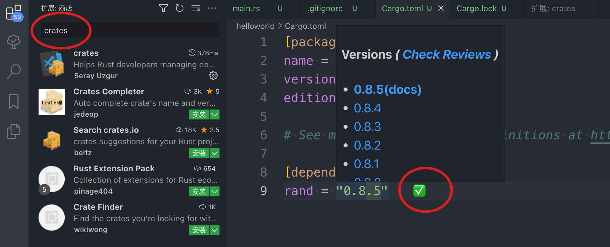
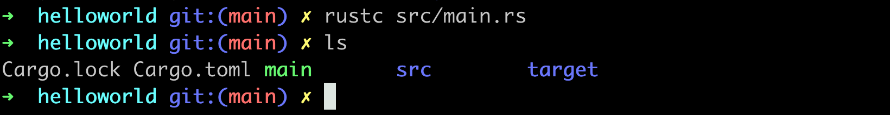

1.helloworld
安装Rust
$ curl --proto '=https' --tlsv1.2 https://sh.rustup.rs -sSf | sh
所有内容都在这里： ~/.cargo/bin
➜ helloworld git:(main) ✗ ls ~/.cargo/bin
cargo cargo-expand cargo-miri rls rust-gdbgui rustc rustfmt
cargo-clippy cargo-fmt clippy-driver rust-gdb rust-lldb rustdoc rustup
工具链介绍
- rustc：编译器
- rustup：升级工具
- rustup doc查看文档
- cargo：包管理工具
安装vscode插件
- rust-analyzer：最重要的rust解析插件

- crates：用于展示插件的子版本，从而进行灵活选择

HelloWorld
创建工程：
cargo new helloworld
此时会自动创建工程结构，目录结构展示如下：

其中：
- main.rs是源文件
- Cargo.toml是配置文件，进行包管理工作，我们手动增加了一个rand包：rand = "0.8.5"
[package]
name = "helloworld"
version = "0.1.0"
edition = "2021"
# See more keys and their definitions at https://doc.rust-lang.org/cargo/reference/manifest.html
[dependencies]
rand = "0.8.5" // <== 手动增加的
编译&运行
回到src同级目录，执行命令进行编译：
cargo build
运行：
cargo run
此时仅执行文件，但是不会编译出二进制文件：

生成bin
编译：
rustc src/main.rs

执行：./main

其他
拓展待研究
rust toolchain list